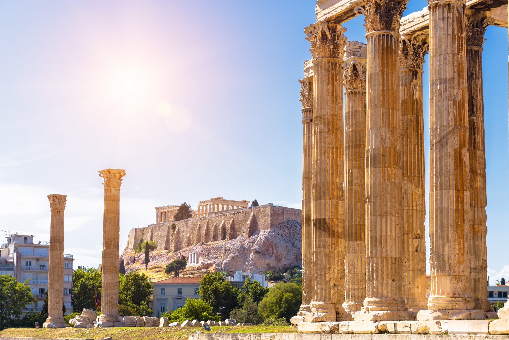
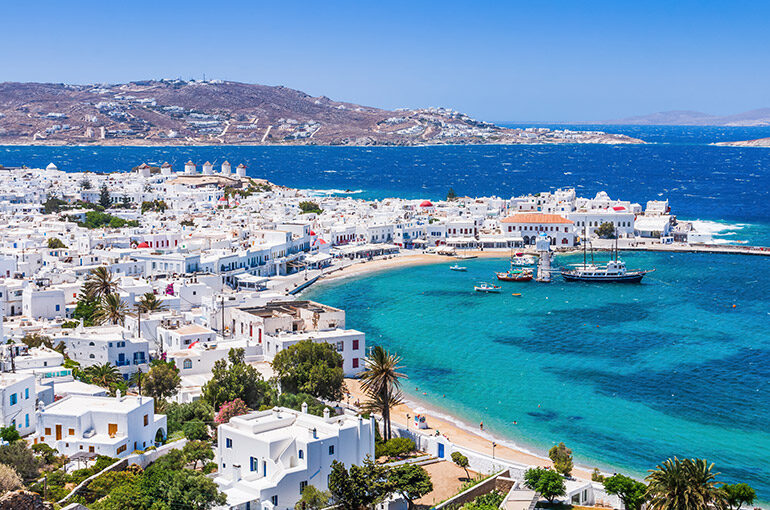
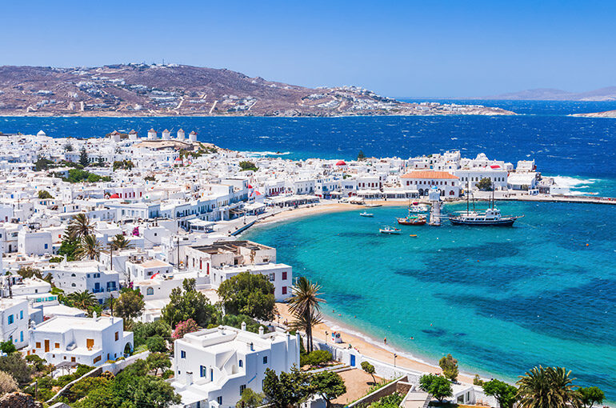
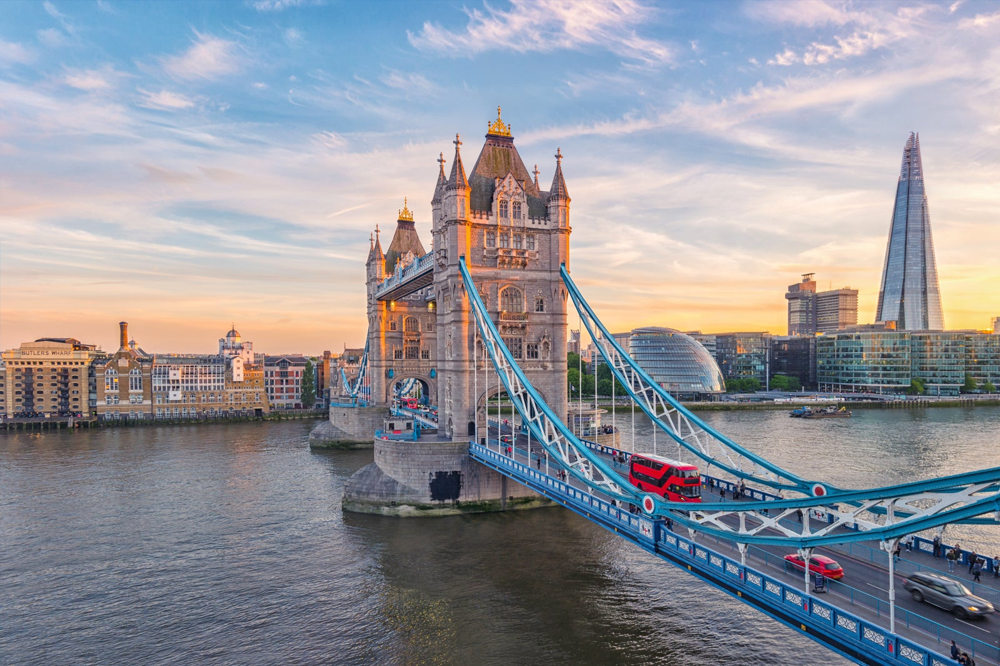
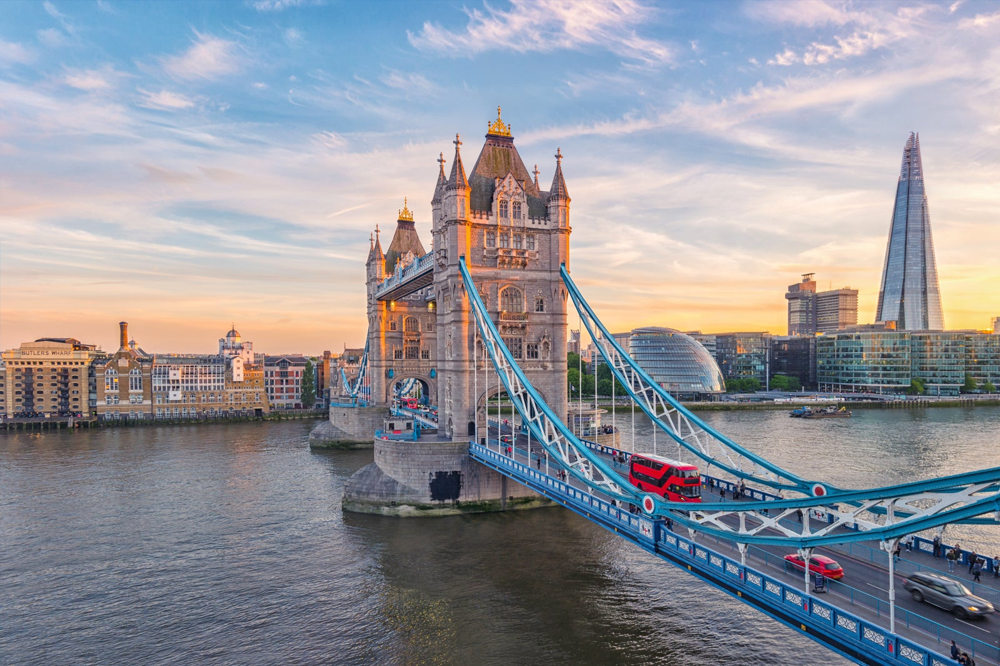

Travel
Here are some of the places I visited in the last 4 years, and you should too!
Paris

Paris, a timeless city of romance and art, invites you to stroll along the Seine, savor pastries in charming cafes, and gaze upon the iconic Eiffel Tower. With every cobblestone street telling stories of history and culture, Paris is an enchanting masterpiece waiting to be explored.
Photo Gallery


Things to do
- Visit the Eiffel Tower
- Explore the Louvre
- Take a stroll along the Seine
- Visit the Notre Dame Cathedral
Athens
Athens, a city steeped in ancient history, invites you to wander through the cradle of Western civilization. From the majestic Acropolis overlooking the city to the vibrant Plaka district's narrow streets, Athens captivates with its blend of ancient ruins and modern charm. Indulge in authentic Greek cuisine at traditional tavernas, explore archaeological wonders, and feel the pulse of a city where mythology and contemporary life seamlessly coexist. Athens is not just a destination; it's a journey through time, a celebration of culture, and an immersive experience in the heart of antiquity.
Photo Gallery

 


Things to do
- Visit the Acropolis
- Explore the Plaka district
- Visit the Temple of Olympian Zeus
- Visit the National Archaeological Museum
Yellowstone

Yellowstone, a natural wonderland of geothermal marvels and untamed wilderness, beckons with its awe-inspiring landscapes and diverse ecosystems. From the iconic Old Faithful geyser that paints the sky with steaming water to the vibrant colors of Grand Prismatic Spring, Yellowstone is a symphony of geysers, hot springs, and wildlife. Explore the meandering trails, encounter bison and elk roaming freely, and marvel at the pristine beauty of Yellowstone Lake. It's not just a national park; it's a sanctuary where nature unfolds in all its glory, offering an unforgettable journey through geology, wildlife, and the sheer majesty of the great outdoors.
Photo Gallery


Things to do
- Visit Old Faithful
- Explore the Grand Prismatic Spring
- Visit the Yellowstone Lake
- Visit the Grand Canyon of Yellowstone
London

London, a city where history meets modernity, invites you to traverse its iconic streets and landmarks. From the regal elegance of Buckingham Palace to the cutting-edge art scene at Tate Modern, London is a vibrant mosaic of cultures and eras. Immerse yourself in the hustle and bustle of Covent Garden, relish a traditional afternoon tea, and stroll along the Thames River with views of the London Eye. In this cosmopolitan hub, historic treasures like the Tower of London coexist with the trendy vibes of Shoreditch. London is not just a city; it's a dynamic fusion of tradition and innovation, beckoning you to explore its diverse neighborhoods and discover the heartbeat of the United Kingdom's capital.
Photo Gallery
 



Things to do
- Visit the Buckingham Palace
- Explore the Tower of London
- Visit the London Eye
- Visit the British Museum
Geneva

Geneva, a city nestled along the shores of Lake Geneva, radiates an air of cosmopolitan charm and natural beauty. From the iconic Jet d'Eau fountain soaring into the skyline to the serene shores of the lake, Geneva captivates with its picturesque landscapes and international flair. Explore the cobbled streets of the Old Town, where history meets modernity, and discover the United Nations headquarters standing as a symbol of diplomacy. Indulge in Swiss gastronomy at lakeside cafes, enjoy a leisurely cruise on the lake, and absorb the cultural richness of museums like the International Red Cross and Red Crescent Museum. Geneva is not just a city; it's a harmonious blend of culture, diplomacy, and stunning scenery, welcoming you to experience the best of Switzerland's diversity.
Photo Gallery

Things to do
- Visit the Jet d'Eau fountain
- Explore the Old Town
- Visit the United Nations headquarters
- Visit the International Red Cross and Red Crescent Museum